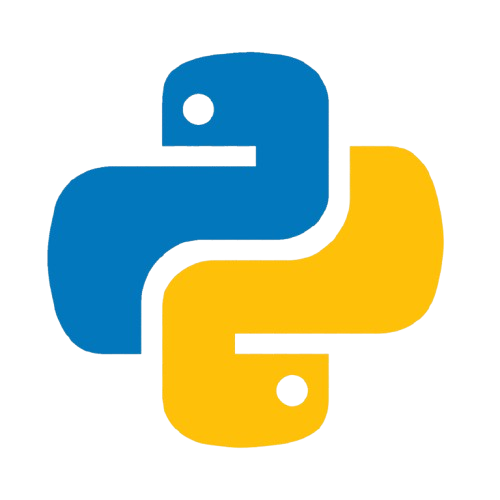
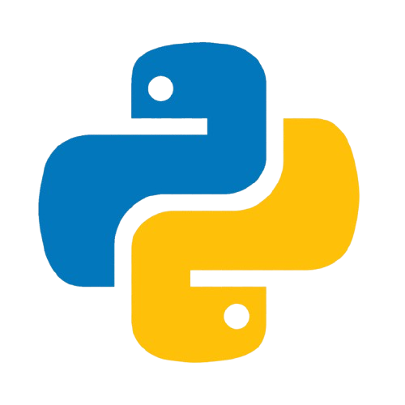

I want to work on rockets, robots and artificial cognition.
I am an international student currently in Canada & originally from India,I hold an advanced diploma in Electromechanical Engineering Technology from Humber College and am currently completing a degree in Software Engineering Technology from McMaster University. This multidisciplinary background fuels my passion for programming the brains behind bare-metal systems capable of doing amazing things all the way from propulsively landing rockets to humanoid robots, and developing deep neural networks (possibly even one that could help me write a better bio, since creative writing isn’t exactly a skill I would put in the skills section).
 


| Name | Description | Resources |
|---|---|---|
| SICK 3 - Machine Vision & Auto ID | Developed a deep learning–driven machine vision system proposed by SICK to demonstrate advanced sensor intelligence for industrial defect detection. The system trains an ML model on large image datasets to classify products as acceptable or defective, supporting automated sorting and inventory management. A contrast sensor triggers high-speed barcode scanning on rotating objects, showcasing robust sensing performance. Designed as a modular inspection cell for trade show demonstrations and scalable deployment in shipping and receiving operations using SICK Lector63x and Inspector63x sensors. | |
| Satellite Orbit Classifier | Implemented a decision tree classifier to classify satellites into LEO, GEO, MEO and Elliptical categories based on orbital parameters like Eccentricity, Semi-Major Axis, Period and Inclination. | |
| Rocket Launch Tracker | The rocket launch tracker software provides launch fanatics and space enthusiasts with real time updates on upcoming rocket launches from space agencies such as SpaceX, NASA and international organizations(for future patch).Users will get the ability to track launch schedules, receive notifications and explore mission profiles from the launching body. The software is designed mainly to cater to space enthusiasts who want to be in the continual loop of updates in the global spaceflight sector. |